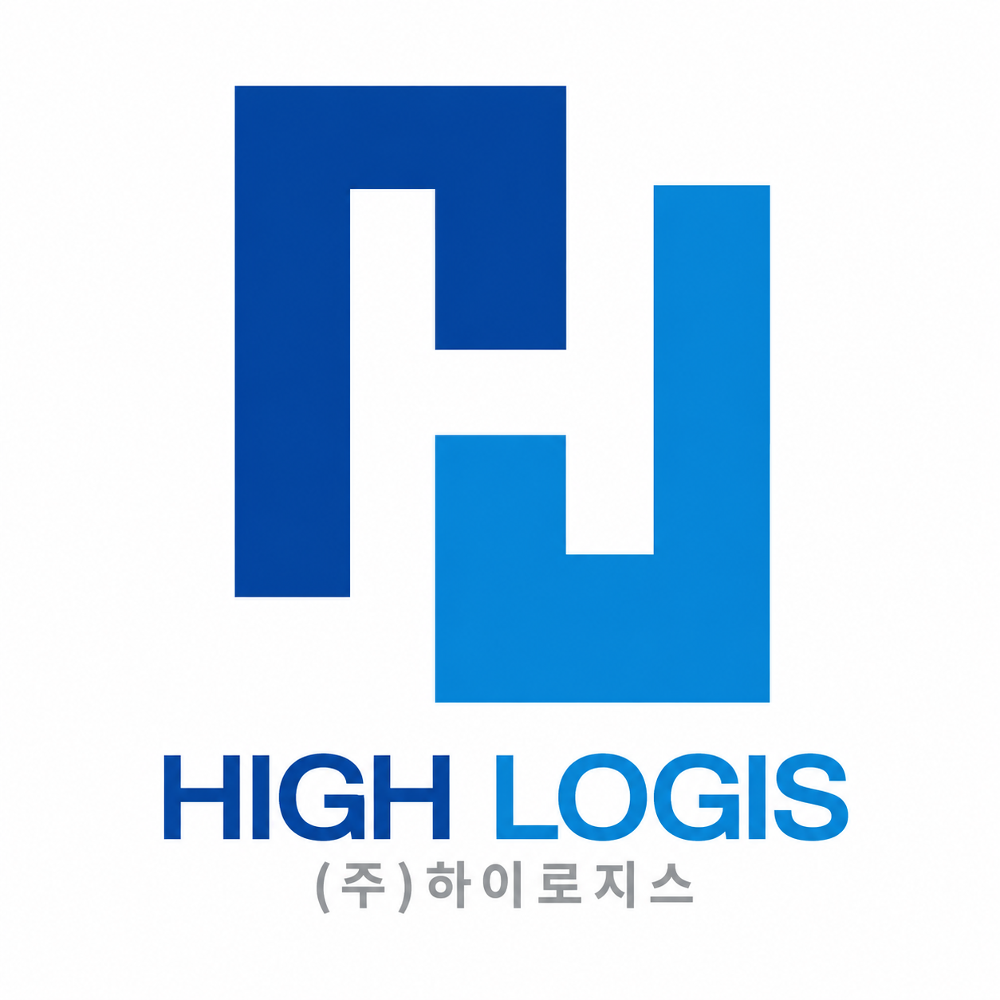

운송 요청 확인
상·하차지, 일정, 물량과 차량 조건을 정확하게 확인합니다.

HIGH LOGIS(주)하이로지스대표전화1644-1712운송·기사 문의배차·운행·소통·정산의 각 단계를 체계적으로 연결해
안정적이고 투명한 운송 환경을 만들어갑니다.
운송 요청과 노선 조건을 확인하고 적합한 차량을 배치하며, 운행 중 필요한 정보를 기사와 신속하게 공유합니다.
운송 완료 후에는 운행 내역과 정산 정보를 명확하게 관리해 화주와 기사 모두가 신뢰할 수 있는 운영 체계를 지향합니다.
운송 요청부터 완료와 정산까지 단계별로 관리합니다.
상·하차지, 일정, 물량과 차량 조건을 정확하게 확인합니다.
운송 조건에 맞는 노선과 차량을 검토해 신속하게 배차합니다.
기사와 필요한 운행 정보를 공유하고 변동 상황에 빠르게 대응합니다.
운송 완료 내역을 확인하고 정산 정보를 투명하게 관리합니다.
노선과 시간, 차량 조건을 고려해 효율적인 배차를 운영합니다.
운행 공지와 변경사항을 빠르게 공유해 현장 혼선을 줄입니다.
출발부터 도착까지 필요한 운행 정보를 체계적으로 확인합니다.
운임과 운행 내역을 기준으로 명확하고 투명한 정산을 지향합니다.